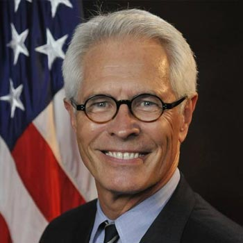

<div class="container">
	<div class="row">
        <div id="speaker-detail" class="col-lg-10 col-lg-offset-1">
            <div class="row">
            	<button title="Close (Esc)" type="button" class="mfp-close">×</button>
                
                <div class="col-md-5 col-lg-5 no-padding">
                    
                </div>
                    
                <div class="col-md-7 col-lg-7">
                    <h2>Barry <span>Grissom</span></h2>
                    <p class="lead">Former United States Attorney</p>
                    <!--
                    <ul class="social list-inline list-unstyled">
                    	<li><a href=""><i class="fa fa-2x fa-facebook-square"></i></a></li>
                        <li><a href=""><i class="fa fa-2x fa-twitter-square"></i></a></li>
                        <li><a href=""><i class="fa fa-2x fa-google-plus-square"></i></a></li>
                        <li><a href=""><i class="fa fa-2x fa-linkedin-square"></i></a></li>
                    </ul>
                    -->
                    
                    <div id="content">
                    	<p>After painting houses to put himself through college and his first year of law school, Barry Grissom understood what it meant to put in a hard day’s work. After law school he wanted to use his legal skills to help working people.  For twenty seven years as a solo practitioner he did just that, representing  injured persons and victims of discrimination. </p>
                    	<p>In 2010 he was honored to be nominated by President Barack Obama and unanimously confirmed by the Senate to serve as the United States Attorney for the District of Kansas.  He served on the Attorney General’s Advisory Committee from 2014-16. This appointment gave him the unique opportunity to continue to help Kansan's and their communities.  As the US Attorney Barry traveled approximately 70,000 miles throughout the state speaking to citizens and listening to the needs of local law enforcement. He felt it was vitally important to speak directly to people so they could see what the US Attorney and his office was doing on their behalf to keep them safe in their homes, businesses, schools and houses of worship.</p>
                    	<p>Barry is proud to have graduated from the “new” campus at Johnson County Community College in 1974. He enrolled in and graduated from Kansas University in 1977. After taking year off to raise funds, he pursued a legal education at Oklahoma City University of Law where he was a member of Law Review and Moot Court, graduating in 1981.   He is married to a small business owner of 25 years, Renee, with three children, two grandchildren and two new puppies.</p>
                    </div>
                </div>
            
            </div>
        </div>
    </div>
</div>